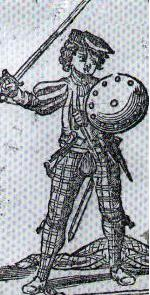
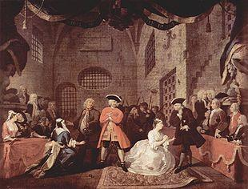
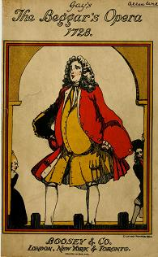

The Women are a' Gane Wud
Lyrics ascribed to Lady Nairne
Tune (midi)
"An old Woman clothed in gray"Arrangement by John Creig "Scots Minstrelsie" 1903
Sequenced by Ch.Souchon



|
CHORUS
The women are a' gane wud; O that he had bidden awa! He's turn'd their heads the lad, And ruin will bring on us a'. 1. I aye was a peaceable man, My wife she did doucely behave; But now, do a' that I can, She 's just as wud as the lave. 2. My wife she wears the cockade, Though she kens it's the thing that l hate ; There's ane too prinn'd on her maid, And baith will tak' the gate. The women are, etc... 3. I've lived a' my days in the strath ; Now Tories infest me at hame; And though I tak' nae part at a', Baith sides do gi'e me the blame. 4. The senseless creatures ne'er think What ill the lad will bring back ; We'd ha'e the Pope and the de'il, And a' the rest o' the pack. The women arc, etc... 5. The wild Highland lads they did pass, The yetts wide open they flee ; They ate the very house bare And ne'er spier'd leave o' me. 6. But when the red coats gaed by, D'ye think they'd let them alane? They a' the louder did cry- "Prince Charlie win soon get his ain." The women are, etc...
REFRAIN
|
Femmes, devenez-vous donc folles; Que n'est-il resté loin d'ici! Vous ne jurez que par ce drôle, La source de tous nos soucis. 1. J'étais ennemi de la guerre, Ma femme l'était tout autant; Oui, mais à présent j'ai beau faire, Elle aussi prend le mord aux dents. 2. Ma femme arbore la cocarde, Sachant que cela me déplait ; Et sa servante aussi s'en targue, L'une et l'autre ont des airs guerriers. Femmes, ..., etc... 3. Moi qui n'aime rien tant que l'ordre ; Ma maison grouille de Tories; Je ne prends parti pour personne, Des deux côtés je suis honni. 4. Elles qui n'ont rien dans la tête Ne voient pas qui suit le gamin. Le Pape à revenir s'apprête, Ainsi que le diable et son train. Femmes, ... etc... 5. Des Highlanders j'eus la visite, Ils fuirent sans refermer l'huis ; En laissant ma cuisine vide Bien que je ne l'aie point permis. 6. Puis des Habits rouges passèrent, Mais elles ne se sont pas tues, Non, les voilà qui vocifèrent - "Charlie bientôt aura son dû!" Femmes, ... etc... Trad. Ch.Souchon (c) 2006 |
|
"By Dr. Charles Rogers the words of this song are attributed to
Lady Nairne
; and certainly with no other writer with Jacobite sympathies, historical insight and literary style they are in more complete accord. For examples of the extraordinary enthusiasm with which the women took up the cause of Bonnie Prince Charlie, reference may be made to Lady Murray of Broughton, who appeared on horseback at the Prince's triumphal progress down the High Street of Edinburgh and to
the lady of Clan Cameron
who rode to the assistance of the Prince et the head of two hundred retainers.
Lord President Forbes ,..., remarked,.. that 'men's sword did less for the cause of Charles than the tongues of his fair countrywomen"...
The time (9/8) in which this melody (Slip Jig) is written occurs very rarely in Scottish songs."
|
"Le Dr Charles Rogers attribue les paroles de ce chant à
Lady Nairne
; et il est certain qu' avec aucun autre écrivain connu pour ses sympathies Jacobites, ses connaissances historiques et son style littéraire, elles ne s'accordent aussi bien. Comme exemples de l'enthousiasme délirant suscité chez les femmes par la cause du Prince, on peut citer Lady Murray de Broughton, qui assista à cheval à son défilé triomphal dans la Grand rue d'Edimbourg et cette
amazone du Clan Cameron
qui se rangea aux côtés du Prince, à la tête de deux cents de ses gens.
Le Lord Président Forbes ..., fit remarquer,... que les épées des hommes firent moins pour la cause de Charles que les langues de ses jolies compatriotes"... Le tempo (9/8) dans lequel la mélodie (Slip Jig) est écrite se rencontre très rarement dans les chants écossais".
Source: John Greig dans "The Scots Minstrelsie."
|

|
"Charles flanked by Jenny Cameron and
Flora McDonald
".
From "London Magazine" - March 1747. The satirical rhyme under the picture reads thus: "How happy could I be with either Were th'other dear charmer away! But since I am destin'd for neither, At present no longer I'll stay. This is a slightly modified excerpt from John Gay's popular "Beggar's Opera", premiered in January 1728. In the original the second verse is: "But while you thus tease me together, To neither a word will I say." The air (to the tune "Have you heard a frolicksome ditty?" ) is sung by Macheath who is both a bandit and a philanderer. The same quotation concludes Robert Hamer's film "Kind Hearts and Coronets". |
"Charles entouré de Jenny Cameron et de
Flora McDonald
".
"London Magazine" - Mars 1747. Un poème satirique accompagne cette gravure: "L'une ou l'autre m'aurait comblé Si sa rivale était absente. Aucune ne m'est destinée: Je m'en vais séance tenante." Il s'agit d'une citation à peine modifiée du fameux "Opéra du Gueux" de John Gay, donné pour la première fois en 1728. Dans l'original, la seconde strophe s'énonce: "Mais puisqu'ainsi l'on me taquine A aucune je ne m'adresserai." L'air (qui est celui de "Connaissez-vous cette joyeuse chanson?") est chanté par McHeath qui est un bandit et un coureur de jupons. La même citation conclut le film de Robert Hamer, "Noblesse oblige". |
|
 Ballad operas were satiric operas without recitative. The lyrics were set to popular broadside ballads, well-known opera arias, folk tunes and even church hymns.The Beggar's Opera premiered in London on 29 January 1728 and ran for 62 consecutive performances. The work became the English dramatist John Gay 's (1685 - 1732) greatest success, enabling the manager of the theatre to build a new theatre, Covent Garden, forerunner of the present Royal Opera House. In 1920, the Beggar's Opera was performed again at the Lyric Theatre in Hammersmith, London and ran for 1463 performances, a longevity record still to be beaten! The Opera used, among others, Scottish folk melodies mostly taken from the poet Allan Ramsay 's popular 'Gentle Shepherd' (1725). But its chief attractions were its lampooning the Italian opera style and its satirising corrupt statesmen in general , and the Whig statesman Robert Walpole in particular , represented by their low-class counterparts, thieves and whores, especially the notorious criminal Jonathan Wild and Jack Sheppard. Robert Walpole 's government had been tolerant of Wild's thievery and the South Sea directors' escape from punishment. In the Opera, Peachum, who is both fence and thief-catcher, sets the tone with this song: Through all the employments of life Each neighbour abuses his brother; Whore and rogue they call husband and wife: ...And the statesman, because he's so great, Thinks his trade as honest as mine. Two weeks after opening night, an article appeared in "The Craftsman", the leading Opposition newspaper, ostensibly protesting Gay's work as libelous and quoting the Beggar's last remark: "That the lower people have their vices in a degree as well as the rich, and are punished for them" ...innuendo, that rich people never are. The article was reprinted as "A Key To The Beggar's Opera", and widely distributed, actually assisting Gay in satirizing the Walpole establishment. For his original production in 1728, Gay intended all the songs to be sung without any accompaniment, but the theatre director, insisted on having the composer Johann Christoph Pepusch write a formal French overture and also to arrange the 69 songs. If the Overture was fully preserved, only Pepusch's simplest bass accompaniments were noted and the melodies had to be re-arranged by later musicians, such as Thomas Arne (1710 - 1778), who also composed a ballad opera, Thomas and Sally . The examples given here are arrangements by the baritone Frederic Austin , who also sang the role of Peachum for the 1920 performance The "Beggar's Opera" inspired Bertold Brecht and Kurt Weil to write, in 1928, their popular "Threepenny Opera" with the famous Macheath song. This was the first of a long list of new arrangements and new settings of this opera: Benjamin Britten, a film version with Laurence Olivier starring, Vàclaw Havel, Wole Soyinka, Richard Boninge, etc... |
 Les "Ballad operas" étaient des opéras satiriques sans récitatifs. On y mettait des paroles sur des ballades de feuilles volantes, des airs d'opéra en vogue, des chants folkloriques et même des cantiques.L' Opéra du Gueux fut donné en première à Londres le 29 janvier 1728, suivie de 62 autres représentations. Ce devait être le plus grand succès du dramaturge anglais John Gay (1685 - 1732) et il permit au directeur du théâtre d'en faire construire un autre, à Covent Garden, précurseur de l'actuel Opéra Royal. En 1920, l'Opéra du Gueux fut remonté au Théatre Lyrique d'Hammersmith, à Londres et on en donna 1463 représentations, record inégalé à ce jour! Cet opéra utilisait, entre autres, des airs du folklore écossais tirés pricipalement du très populaire 'Gentle Shepherd' (1725) d' Allan Ramsay . Mais ses principaux points forts étaient sa satire de l'opéra italien et des politiciens corrompus en général, campés par leurs pendants dans les basses classes de la société, les prostituées et les voleurs tels que les fameux criminels Jonathan Wild et Jack Sheppard, et du Whig Robert Walpole en particulier, dont le gouvernement avait couvert les agissements de Wild et des promoteurs de l'opération South Sea . Dans l'opéra, Peachum, qui est à la fois receleur et indic de police, donne le ton dans sa chanson: Dans la vie quelque soit l'emploi Donner le change est ce qu'on doit. Fille et souteneur sont mariés ...L'homme d'état, si grand qu'il soit, S'estime honnête comme moi. Deux semaines après la première un article parut dans l'organe de l'opposition l'"Artisan", où l'on s'en affectait de s'en prendre à l'oeuvre de Gay, qualifiée de libelle, et où l'on citait la dernière remarque du Gueux: "Tout comme les riches, les petites gens ont des vices à leur mesure, pour lesquels ils dont poursuivis" ... sous-entendu "à la différence des riches." Cet article, tiré à part sous le titre "Clé pour comprendre l''Opéra du Gueux', fut largement diffusé, une façon de soutenir Gay dans sa critique de l''establishment' de l'ère Walpole. Pour la production de 1728, Gay voulait que les chants soient exécutés sans accompagnement, mais le directeur du théâtre, tint à ce que le musicien Jean-Christophe Pepusch , compose une ouverture à la française en bonne et dûe forme et des arrangements pour les 69 chants. Si l'ouverture a été entièrement conservée, ne furent notés que des éléments des accompagnements, et les mélodies durent être arrangées par de nouveaux musiciens tels que Thomas Arne (1710 - 1778), lequel composa aussi un "ballad opera", Thomas et Sally . Les exemples donnés sont des arrangements par le baryton Frederic Austin , l'interprète du rôle de Peachum pour la représentation de 1920. "L'opera du gueux a inspiré à Bertold Brecht et Kurt Weil, en 1928, leur "Opéra de Quat' Sous" avec la fameuse "Complainte de Macheath". Cette transposition était la première d'une longue série: Benjamin Britten, une adaptation au cinéma avec Laurence Olivier, Vàclaw Havel, Wole Soyinka, Richard Boninge, etc... |
| Title of Air in "Beggar's Opera" | Original Title of Air | Jacobite Song |
|---|---|---|
|
N° 2
"For all Employments of Life"
N° 3 "'Tis Woman that seduces all Mankind" N°17 "O what pain it is to part" N°18 "Were I laid on Greenland's Coast" N°22 "If the Heart of a Man" N°35 "How happy could I be with either?" N°44 "A Curse attends that Woman's Love" N°48 "The charge is ready" N°50 "The Condemned hold" |
N° 2
"An Old Woman clothed in gray"
N° 3 "Grey-eyed Morn" N°17 "Ann thou wert mine own Thing" N°18 "Over the Hills and far away" N°22 "Would you have a Virgin" N°35 "Have you heard of a frolicsome Ditty" N°44 "O Bessie Bell" N°48 "Bonnie Dundee" N°50 "Sally in our Alley" |
"Women are gone wild"
"O Beautiful Britannia" "Divinely led thou needst to be" "Over the Seas and far away" "Would you know what a Whig is" "Women are gone wild" "Why take you pleasure" "Bonie Dundee" "The South Sea Ballad" |